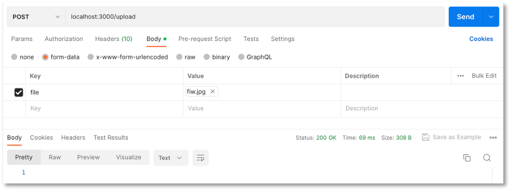
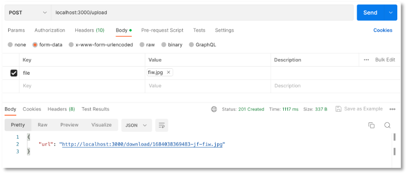
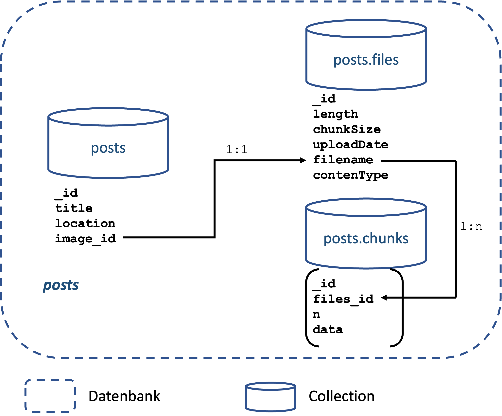
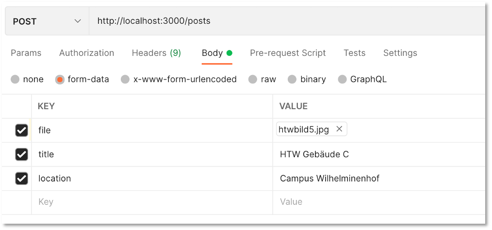
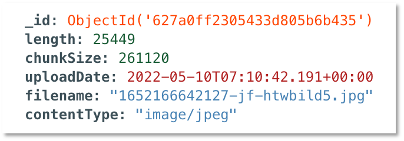

Backend-Erweiterung um das Speichern von Bildern¶
Bis jetzt haben wir nur Daten im JSON-Format zwischen Frontend und Backend ausgetauscht und auch nur solche Daten in der MongoDB gespeichert. Bilder (und auch andere Dateien) sind FormData-Objects im multipart/form-data-Format. Zur Behandlung solcher Daten verwenden wir ein Middleware für unser Backend, namens Multer.
Hint
Wenn Sie nur am Code für unser Backend interessiert sind, dann können Sie auch direkt zu Zusammenführen der Funktionalitäten springen. Im Folgenden werden die Entstehung aber näher erläutert und verschiedene Varianten diskutiert.
MongoDB speichert Daten bis zu einer Größe von 16Mb im Binärformat. Um auch größere Dateien (Bilder, Videos, pdf, ...) speichern zu können, werden die Dateien in chunks zerlegt und können dann aus diesen Stücken wieder zusammengesetzt werden. Dafür gibt es in der MongoDB eine GridFS-Spezifikation. Das MongoDB-Paket (also der MongoDB-Node.js-Treiber bringt bereits eine GridFS-API mit. Für die Zusammenarbeit von Multer und GridFS bietet sich Multer-GridFS-Storage an.
Wir installieren Multer und Multer-GridFS-Storage im Backend-Projekt und zeigen im Folgenden deren Verwendung:
npm install multer multer-gridfs-storage
Leider ist die Version 5.0.2 von multer-gridfs-storage nicht kompatibel mit der multer-Version 1.4.5.-lts.1. Wir müssen deshalb in der package.json die Version für multer auf 1.4.4. setzen:
Die package.json sollte nun ungefähr so aussehen:
1 2 3 4 5 6 7 8 9 10 11 12 13 14 15 16 17 18 19 20 21 22 23 24 25 26 27 28 29 | |
Zunächst erstellen wir zwei weitere Routen /download und /upload in der server.js.
1 2 3 4 5 6 7 8 9 10 11 12 13 14 15 16 17 18 19 20 21 22 | |
Wir benötigen also sowohl eine routes/upload.routes.js als auch eine routes/download.routes.js. Beachten Sie, dass zum Compilieren des Projektes in den beiden Skripten mindestens
const express = require('express');
const router = express.Router();
module.exports = router;
const express = require('express');
const router = express.Router();
module.exports = router;
enthalten sein muss. Wir kümmern uns nun zunächst darum, Bilder in die MongoDB hochzuladen.
Upload von Bildern¶
Für den Upload der Bilder erstellen wir zunächst einen Ordner middleware und darin eine Datei upload.js. In dieser Datei wird unter Verwendung von Multer ein GridFsStorage eingerichtet. Die zu verwendende Collection benennen wir hier posts (siehe bucketName). Die Datenbank heißt image (siehe dbName). Sie können diese Namen frei wählen. Beachten Sie dann aber im Folgenden überall die Verwendung von posts (in der MongoDB entstehen die Collections posts.files und posts.chunks - siehe z.B. hier oder hier).
1 2 3 4 5 6 7 8 9 10 11 12 13 14 15 16 17 18 19 20 21 22 23 24 25 26 27 28 29 30 31 32 | |
Beachten Sie, dass wir beim Upload der Bilder für diese Bilder Dateinamen mithilfe von ${Date.now()}-jf-${file.originalname} erstellen bzw. festlegen. Damit diese Dateinamen eindeutig sind, wird mithilfe von Date.now() der aktuelle Zeitstempel verwendet. Der String -jf- in der Mitte kann natürlich auch durch Ihre Initialen ersetzt (oder weggelassen) werden. Außerdem wird auch noch der originale Dateiname verwendet. Insgesamt sollte sichergestellt werden, dass die Dateinamen eindeutig sind (deshalb auch Date.now()).
In Zeile 18 werden die Dateitypen festgelegt, die akzeptiert werden, hier png und jpeg. Diese Liste kann erweitert oder eingegrenzt werden.
Diese Middleware nutzen wir nun für den POST-Request des Bildes (siehe folgend Zeile 5 upload.single('file')) und implementieren die routes/upload.routes.js wie folgt:
1 2 3 4 5 6 7 8 9 10 11 12 13 14 15 16 17 18 19 | |
In Zeile 5 wird die multer-Middleware mit update.single('file') aufgerufen. Deren Funktionalität haben wir in der middleware/upload.js überschrieben und genauer spezifiziert. Neben der Funktion .single(fieldname) stehen auch die Funktionen .array(fieldname[, maxCount]) und .fields(field) zur Verfügung, um gleichzeitig mehrere Dateien hochzuladen (siehe multer).
Als Response wird die URL zurückgegeben, unter der das Bild heruntergeladen werden kann (http://localhost:3000/download/${req.file.filename}). Beachten Sie, dass die Backend-URL und auch der Port hier hart kodiert sind. Das sollte besser in die .env-Datei ausgelagert werden.
Upload mithilfe von Postman¶
Das Hochladen der Bilder kann nun getestet werden. Starten Sie das Backend. Öffnen Sie Postman und geben Sie als URL http://localhost:3000/upload ein und wählen als Anfragemethode POST. Klicken Sie auf Body und markieren dann form-data:

Geben Sie unter KEY den Schlüssel file ein (das wird manchmal vergessen und dann bekommen Sie einen multer-Fehler unexpected field!) und wählen Sie aus dem Dropdown-Menü File. Unter VALUE erscheint der Button Select Files. Klicken Sie darauf und wählen ein png- oder ein jpeg-Bild (kann auch .jpg sein) aus, das Sie hochladen wollen. Klicken Sie dann auf Send. Es erscheint:

Ich habe in diesem Beispiel die Datei fiw.jpg hochgeladen.
Wenn Sie sich die MongoDB anschauen (in Compass), dann finden Sie darin die beiden Collections posts.files und posts.chunks. In posts.files sind die Metadaten des hochgeladenen Bildes zu finden, z.B.
{
"_id": {
"$oid": "646062e135cc14afbf5fd29b"
},
"length": 86584,
"chunkSize": 261120,
"uploadDate": {
"$date": "2023-05-14T04:26:10.472Z"
},
"filename": "1684038369483-jf-fiw.jpg",
"contentType": "image/jpeg"
}
Die dazugehörige _id finden Sie auch in posts.chunks (können Sie sich in der mongosh mit db.posts.chunks.find({ _id: "646062e135cc14afbf5fd29b" }) anschauen). Darin ist das Bild im Binary-Format gespeichert.
Download von Bildern¶
Für den Download der gespeicherten Bilder gehen wir ähnlich vor, wie beim Upload, benötigen dafür aber nicht mehr die multer-Middleware, dafür aber GridFS Bucket aus dem MongoDB-Node-Paket. Wir implementieren routes/download.routes.js mit folgendem Inhalt:
1 2 3 4 5 6 7 8 9 10 11 12 13 14 15 16 17 18 19 20 21 22 23 | |
GridFSBucket ist eine Klasse aus der Node.js-MongoDB-API. Diese hätten wir auch schon für das Upload verwenden können (siehe z.B. hier).
Mit der openDownloadStream()-Funktion der GridFSBucket()-Klasse öffnen wir den Download-Stream des Bildes und geben ihn (genauer gesagt, die Daten data des Streams) als response res zurück.
Download mithilfe von Postman¶
Der Test des GET http://localhost:3000/download/:filename-Endpunktes ist einfach. Dazu verwenden wir einfach die URL, die durch den Upload als Response zurückgegeben wurde (im obigen Beispiel also "http://localhost:3000/download/1684038369483-jf-fiw.jpg"):
Geben Sie in Postman also Ihre URL ein, wählen GET und klicken Send. Es erscheint das Bild:

Da es sich um die GET-Methode handelt, können Sie die URL http://localhost:3000/download/1684038369483-jf-fiw.jpg natürlich auch in den Browser eingeben und das Bild erscheint.
Delete von Bildern¶
Das Löschen der Bilder ist ganz ähnlich zum Download. Wir kommen hier allerdings ohne einen Stream aus und benötigen nur die delete()-Funktion von GridFSBucket. Außerdem suchen wir hier nicht nach dem Dateinamen, sondern nach der id. Erstellen Sie die Datei routes/delete.route.js:
1 2 3 4 5 6 7 8 9 10 11 12 13 14 15 16 17 18 19 20 21 22 23 | |
und binden diese in die server.js ein:
1 2 3 4 5 6 7 8 9 10 11 12 13 14 15 16 17 18 19 20 21 22 23 24 | |
Delete mithilfe von Postman¶
Zum Testen verwenden Sie die id und wählen als Anfragemethode DELETE. Senden Sie ruhig zwei Mal ab, beim ersten Mal wird die Datei gelöscht (aus .files und auch aus .chunks) und beim zweiten Mal sollte eine Fehlermessage erfolgen.
Zusammenführen der Funktionalitäten¶
Wir haben nun recht viele Routen und Endpunkte in unserem Backend. Wir wollen aber gerne, dass es nur die fünf genannten Endpunkte gibt:
| Methode | URL | Bedeutung |
|---|---|---|
| GET | /posts | hole alle Datensätze |
| GET | /posts/11 | hole den Datensatz mit der id=11 |
| POST | /posts | füge einen neuen Datensatz hinzu |
| PUT | /posts/11 | ändere den Datensatz mit der id=11 |
| DELETE | /posts/11 | lösche den Datensatz mit der id=11 |
Das bedeutet, wir binden den Upload und Download von Bildern nun in unsere posts-Routen ein. Die Funktionen werden dabei "etwas" umfangreicher.
Zum Verständnis¶
Wir verwenden Multer und GridFs Storage. Multer ist eine Middleware für Node.js, um Daten im multipart/form-data-Format zu verwalten. Die grundsätzliche Idee ist, dass im Request nicht nur ein body, sondern auch eine file-Eigenschaft enthalten ist (neben dem header). Multer verwendet einen storage, um Bilder (oder andere Dateien) zu speichern. Einen solchen storage bietet GridFs Storage. Dieser kann sogar Dateien größer als 16 MB speichern und die Idee dabei ist, dass die Datei in zwei Collections gespeichert wird, in der files-Collection, welche die (Meta-)Informationen der Datei speichert und der chunks-Collection, die die eigentliche Datei (als Binärdaten) speichert. Eine Datei kann dabei in mehrere chunks unterteilt werden. Die folgende Abbildung zeigt das Prinzip von GridFS:

Für unser Datenmodell sieht die Aufteilung der Daten somit wie folgt aus:
-
in der
posts-Collection speichern wir- die
_iddes Posts, - den
titleeines Posts, - die
locationund - die
image_id. Dieimage_identhält den Dateinamenfilenamedes Bildes.
- die
-
in der
posts.files-Collection speichern wir (GridFs)- die
_idder Datei, - die
lengthder Datei, - die
chunkSize, - das
uploadDate, - den
filename(siehe inpostsdieimage_id) und - den
contenType(z.B.image/jpeg)
- die
-
in der
posts.chunks-Collection speichern wir (GridFs)- die
_iddes Chunks, - die
files_id(diese entspricht der_idder Datei in derposts.files-Collection), - ein
n(fortlaufende Nummerierung der Chunks einer Datei beginnend mit0), - die
datader Datei (in diesem Chunk)
- die
Chunks kann es zu einer Datei mehrere geben. Alle data aller Chunks einer Datei bilden zusammen die Datei als Binär- (bzw. base64-) Daten. Die folgende Abbildung zeigt unser Datenmodell in der Datenbank posts:
Um z.B. einen Datensatz (einen Post) anzulegen, speichern wir also die zugehörigen Daten in der posts-Collection (inkl. dem filename der Datei), speichern die Meta-Informationen der Datei in der posts.files-Collection und die zugehörigen Binärdaten der Datei in posts.chunks.
POST - kompletter Datensatz¶
Die POST-Funktion für einen Datensatz ist nicht viel umfangreicher als zuvor:
14 15 16 17 18 19 20 21 22 23 24 25 26 27 28 29 30 31 32 33 34 35 36 | |
Wichtig ist, dass post.routes.js nun auch die upload.js einbindet:
5 | |
upload.js die korrekte Datenbank verwenden (siehe dbName)!
Beachten Sie, dass die Daten nun nicht mehr als JSON übergeben werden, sondern als form-data. Der Test mithilfe von Postman sieht deshalb nun so aus:

Als Response bekommen Sie aber wieder ein JSON zurück, z.B.:
{
"acknowledged": true,
"insertedId": "627a0ff2305433d805b6b435"
}
Das Bild ist nun in der Collection posts einerseits in posts.files mit den Daten

und in posts.chunks mit den Daten

gespeichert. Beachten Sie, dass das Bild so klein ist, dass es in nur einem chunk gespeichert werden kann. Größere Dateien werden in mehrer chunks aufgeteilt. Alle diese chunks, die zu einem Bild gehören, haben dann dieselbe files_id (aber fortlaufende _ids).
In der posts-Collection sieht der Datensatz dann wie folgt aus:

GET - ein kompletter Datensatz¶
Jetzt den kompletten Datensatz mit einer bestimmten _id zu laden, ist etwas aufwendiger:
- Wir laden zunächst aus der
posts-Collection den Datensatz mit der_id. - Aus diesem Datensatz lesen wir die
image_idaus. Das ist derfilenamemit dem wir in derposts.files-Collection suchen. - Aus der
posts.files-Collection lesen wir den Datensatz mit demfilenameaus und identifizieren dessen_id. - Nach dieser
_idsuchen wir unterfiles_idin derposts.chunks-Collection und lesen alle zugehörigenchunksaus.
Dazu schreiben wir uns zunächst eine Funktion getOnePost(id), die ein Promise zurückgibt.
23 24 25 26 27 28 29 30 31 32 33 34 35 36 37 38 39 40 41 42 43 44 45 46 47 48 49 50 51 52 53 54 55 56 57 58 59 60 61 62 | |
Die Konsolenausgaben können natürlich auch alle entfernt werden, aber es lohnt sich vielleicht auch zu sehen, was an den einzelnen Stellen passiert. In Zeile 37 erfolgt der Zugriff auf die posts-Collection und es wird der Datensatz mit der _id ermittelt, welche als Parameter der URL übergeben wurde. Aus dem Ergebnis post wird dann der Dateiname des Bildes in Zeile 37 mithilfe von post.image_id ermittelt.
In der post.files-Collection wird in Zeile 42 nach dem Datensatz mit dem entsprechenden filename gesucht. Die _id dieses Datensatzes ist der Wert von files_id in der Collection posts.chunks. Nach all diesen Einträgen wird in Zeile 44 gesucht. Aus allen chunks wird dann der base64-String erzeugt und dem Post-Objekt übergeben, welches als resolve der Promise zurückgeschickt wird.
Diese Funktion können wir nun für unseren get('/:id')-Endpunkt verwenden. Die Funktion sieht dann wie folgt aus:
102 103 104 105 106 107 108 109 110 111 112 113 114 115 | |
Wir übergeben der getOnePost()-Funktion die als Parameter übergebene id und senden den resolve-Wert der Promise als Response zurück.
GET - alle Datensätze¶
Der Ansatz, um alle Datensätze aus der MongoDB zu lesen, ist der gleiche, wie für einen Datensatz. Wir ermitteln sukzessive die _id alle Datensätze in der posts-Collection. Dazu schreiben wir uns eine Funktion getAllPosts(). In dieser laden wir zunächst alle posts und rufen dann für jeden einzelnen die getOnePost(id-Funktion auf:
65 66 67 68 69 70 71 72 73 74 75 76 77 78 79 80 81 | |
Die Verwendung dieser Funktion ist wie oben:
12 13 14 15 16 17 18 19 20 21 22 23 24 25 | |
DELETE - einen Datensatz¶
Wird ein Post gelöscht, müssen wir auch dafür sorgen, dass das zugehörige Bild aus der posts.files und der posts.chunks gelöscht wird. Das Löschen ist also dreistufig:
12 13 14 15 16 17 18 19 20 21 22 23 24 25 26 27 | |
Zusammenfassung - Code des Backends¶
Hier nochmal alle wichtigen Dateien unseres Backends:
1 2 3 4 5 6 7 8 9 10 11 12 13 14 15 16 17 18 19 20 21 22 23 24 25 26 27 28 29 30 31 32 33 34 35 36 37 38 39 40 41 42 | |
1 2 3 4 5 6 7 8 9 10 11 12 13 14 15 16 17 18 19 20 21 22 23 24 25 26 27 28 29 30 31 32 33 | |
1 2 3 4 5 6 7 8 9 10 11 12 13 14 15 16 17 18 19 20 21 22 23 24 25 26 27 28 29 30 31 32 33 34 35 36 37 38 39 40 41 42 43 44 45 46 47 48 49 50 51 52 53 54 55 56 57 58 59 60 61 62 63 64 65 66 67 68 69 70 71 72 73 74 75 76 77 78 79 80 81 82 83 84 85 86 87 88 89 90 91 92 93 94 95 96 97 98 99 100 101 102 103 104 105 106 107 108 109 110 111 112 113 114 115 116 117 118 119 120 121 122 123 124 125 126 127 | |
DB_CONNECTION = mongodb+srv://ikt-pwa.0elr1ih.mongodb.net/?authSource=%24external&authMechanism=MONGODB-X509&retryWrites=true&w=majority
DATABASE = htwinsta
PATH_TO_PEM = assets/X509-cert-3298914405631471913.pem
PORT = 3000
Zusammenfassung - die MongoDB posts¶
Hier einige Datensätze für die Datenbank posts:
1 2 3 4 5 6 7 | |
1 2 3 4 5 6 7 8 9 10 11 12 13 | |
Die Collection posts.chunks ist sehr groß, deshalb hier zum Download.